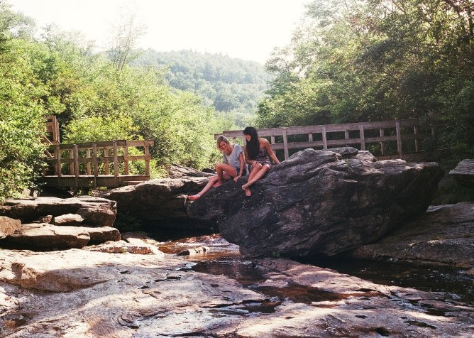
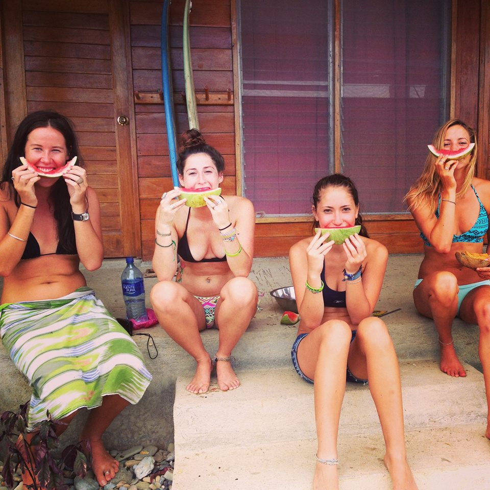
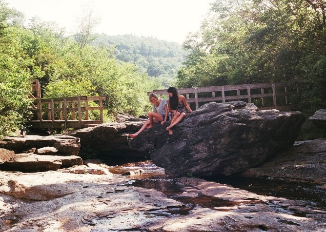
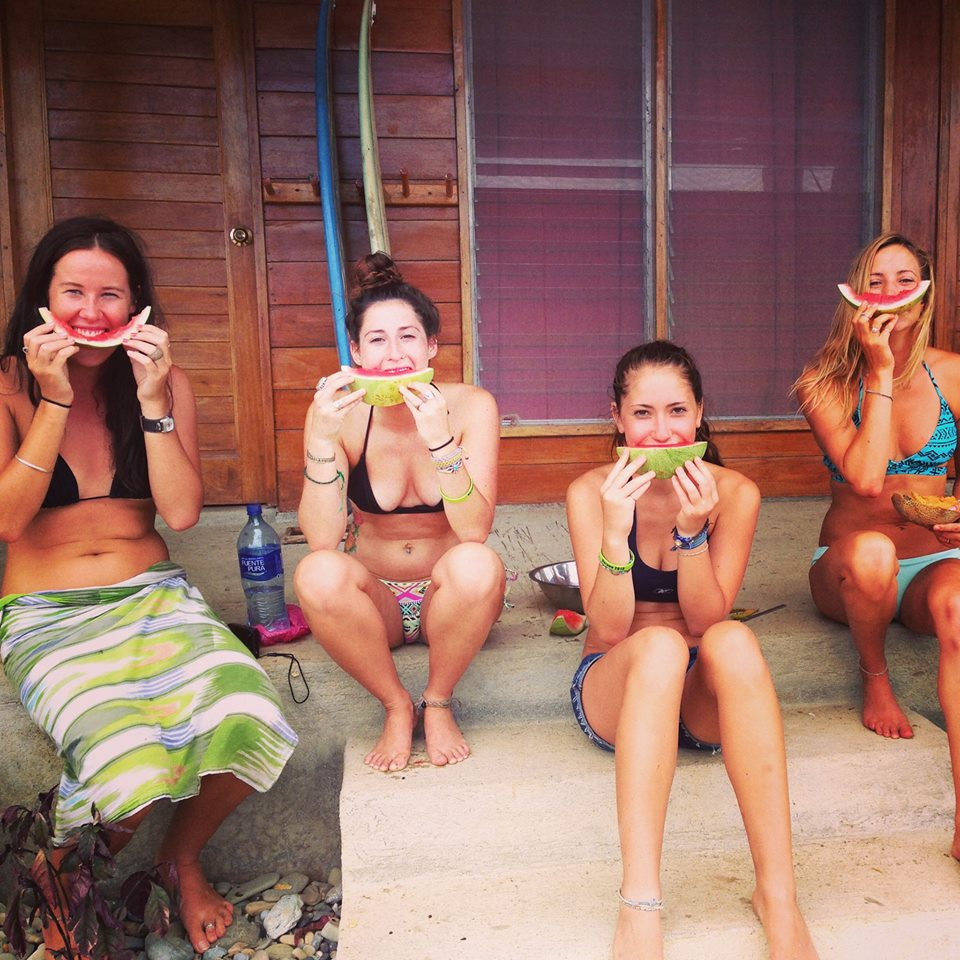

I am an environmentalist, a student, a wanderer, and lover of life. My passion and curiousity drive my ambition to learn, travel, and explore every opportunity. I hope to influence those around me to love the Earth and live life on the edge.
The passion I have for my education in Environmental Engineering has its roots in my travel experience. During my undergraduate career, I was fortunate to have had the opportunity to volunteer in Costa Rica, Nicaragua and Haiti. From this rich period of personal growth I acquired a basic understanding of Spanish, an identity as a global citizen, and the skills to independently navigate in a foreign culture.
Most importantly, these experiences have instilled in me a passion for environmental awareness. I was able to observe first hand that the people in these developing countries are utterly dependent on the environment around them, and yet generally lack a concern for pollution and consideration for the sustainability of natural resources. As my desire to travel has grown with each abroad experience, so has my awareness of environmental needs.
It seems appropriate to support my next leap in life with a study abroad experience, expanding my education in Australia, whose institutes are at the forefront of environmental technology and research. I believe that this experience will provide a unique context for exploring the limits of my education before beginning graduate studies. This experience will also allow me to explore a culture that I am enamored with, surf the waves that I stalk pictures of, and make friends and professional connections in a country that I dream to one day call home.
The passion I have for my education in Environmental Engineering has its roots in my travel experience. During my undergraduate career, I was fortunate to have had the opportunity to volunteer in Costa Rica, Nicaragua and Haiti. From this rich period of personal growth I acquired a basic understanding of Spanish, an identity as a global citizen, and the skills to independently navigate in a foreign culture.
Most importantly, these experiences have instilled in me a passion for environmental awareness. I was able to observe first hand that the people in these developing countries are utterly dependent on the environment around them, and yet generally lack a concern for pollution and consideration for the sustainability of natural resources. As my desire to travel has grown with each abroad experience, so has my awareness of environmental needs.
It seems appropriate to support my next leap in life with a study abroad experience, expanding my education in Australia, whose institutes are at the forefront of environmental technology and research. I believe that this experience will provide a unique context for exploring the limits of my education before beginning graduate studies. This experience will also allow me to explore a culture that I am enamored with, surf the waves that I stalk pictures of, and make friends and professional connections in a country that I dream to one day call home.
 


